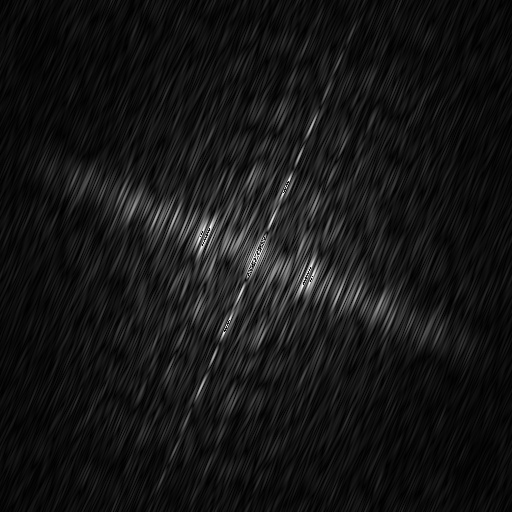
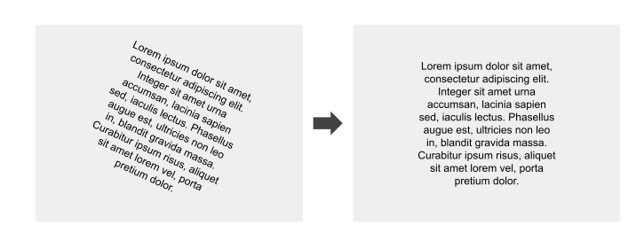

Overview
This project began as part of a software construction course but quickly became a favorite of mine due to the fascinating challenge it presented: automatically detecting and correcting the rotation of an input image. The program targets images skewed or slightly rotated, a common issue in scanned documents or photos, that can severely affect readability and further processing.
To tackle this, I implemented an image processing pipeline that first transforms the spatial image data into the frequency domain using a Fast Fourier Transform (FFT) with the Tukey-Cooley algorithm. The output frequency spectrum highlights the dominant directional patterns present in the image, such as text lines or edges (a visualization pictured below).
Next, the algorithm applies a threshold to the frequency spectrum to isolate the strongest frequency components, filtering out noise and less relevant data. Then, to extract the dominant orientations from these peaks, I use a Hough transform, a classic computer vision technique for detecting lines and shapes. By analyzing the angles of these detected lines, the program estimates the rotation angle of the image.
Once the skew angle is determined, a transformation is applied to rotate the image back to its correct alignment. This method proved effective for correcting almost any rotations in the image.
This project was a hands-on introduction to key image processing and computer vision algorithms, FFT, thresholding, and Hough transforms, and deepened my understanding of how frequency-domain analysis can assist in image processing. This was also a valuable introduction to OOP techniques and software best practices.
Though it started as a course assignment, this work helped me develop both my algorithmic thinking and practical coding skills in image processing.
View Repo